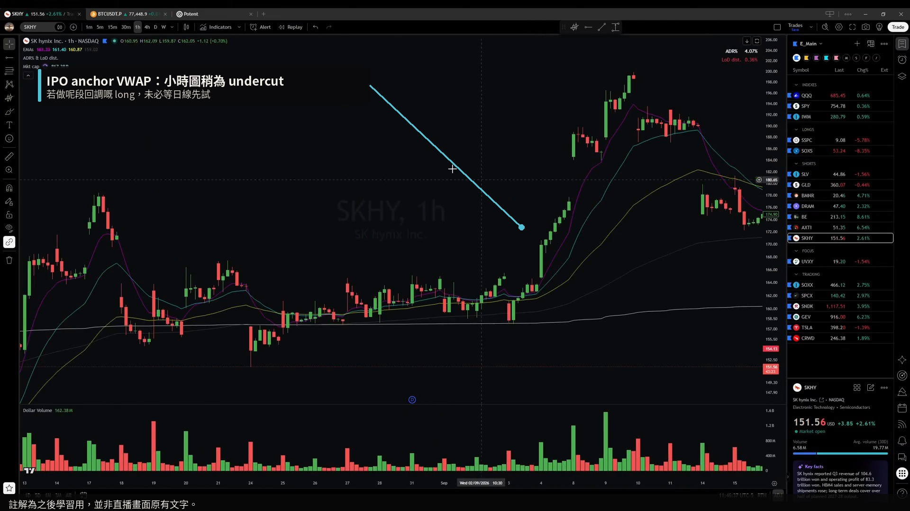
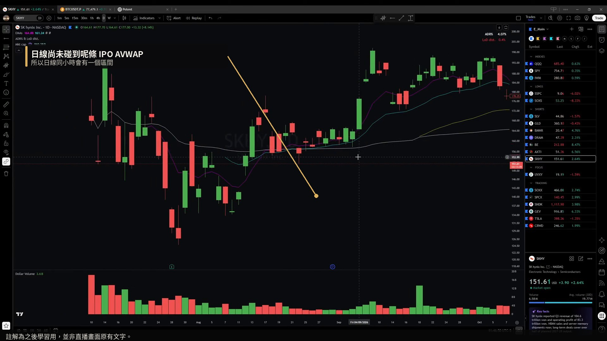
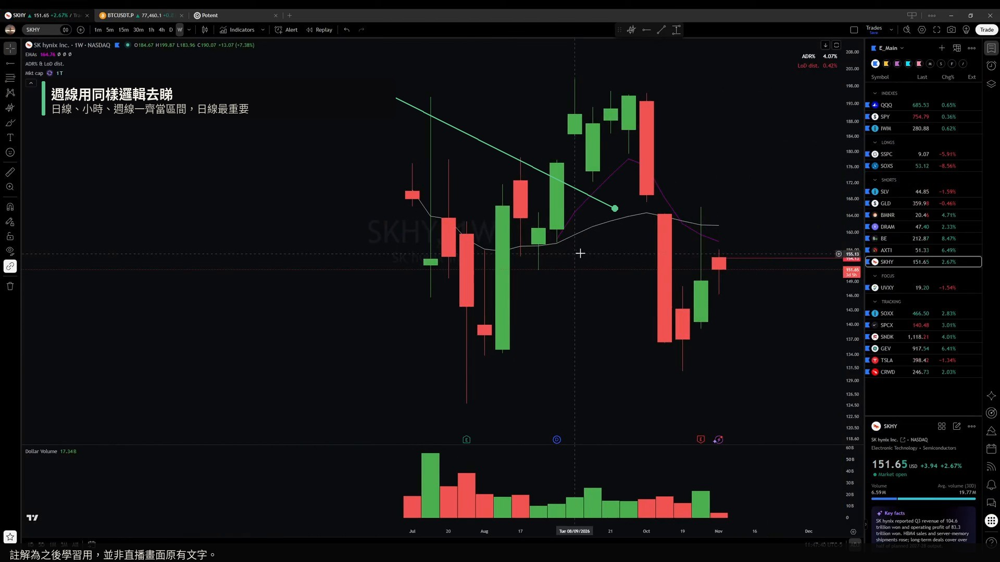

概要
唔同周期嘅 AVWAP 當成一個區間
2:21:58 有人問：用小時圖锚定 AVWAP 之後，唔同周期看到嘅線位置唔同，應該點處理。開頭畫面仲喺 SPCX。佢話會當一個區間：一般以日線做標準、最重要嘅周期，但小時同週線都會睇。有時會超過日線 AVWAP，但其實已經去到週線 AVWAP，可能日線先停一次，若喺日線位置見到回拒就再試；另一方面，若只係彈到小時 AVWAP，距離日線可能仲有空間。
之後用 SK Hynix 嘅 IPO anchor VWAP 做例：若喺呢段回調搵 long，日線尚未碰到 AVWAP，小時已經稍為 undercut。佢未必等日線先入，可能先喺小時試第一次；若失敗再跌，之後又喺日線 AVWAP 附近出現力量或者日内突破，就再試多一次。週線用同樣邏輯。锚定只會放喺擺動高低位，有時係業績、重要事件、IPO 當日，或者大缺口。最好先見到價格對呢條線有尊重、有反應先入場，但「不是必須」。
圖一
SK Hynix 1 小時：IPO AVWAP 已稍為 undercut
直播 2:24:47

原話
With the anchor VWAP I have a question. I anchored it using the hourly chart like you did, but the line's position is different on different time frames. What do you do in this case? Yeah, so I just treat it maybe as a range. Sometimes I think generally I use the daily levels as the standard, as the most important level, the most important timeframe. But hourly and weekly I would also like to look into. So sometimes it's going to overshoot maybe the daily anchor VWAP, and then but it's actually reaching the weekly anchor VWAP level, so maybe I'll just get stopped out once on the daily, but then if it's going to show some rejection at the daily levels, then I will take the second try. Or on the other hand, maybe it's only bouncing into the hourly anchor VWAP, so still a little bit of room till the daily.
關於 anchor VWAP 我想問：我好似你咁用小時圖去锚定，但呢條線喺唔同周期位置唔同，咁應該點？係，我會當佢可能係一個區間。一般我會用日線位置做標準，做最重要嘅水平、最重要嘅周期。但小時同週線我亦會睇。所以有時會超過日線 AVWAP，但其實已經去到週線 AVWAP，咁我可能喺日線先停一次；若之後喺日線位置見到回拒，我就會再試第二次。另一方面，或者只係彈到小時 AVWAP，距離日線可能仲有少少空間。
點樣讀
呢段原理先喺對話裏講完，之後先切到 SK Hynix 做例子。小時圖見到價格稍為低過呢條 IPO AVWAP，對應「未必等日線先試第一次」。
圖二 · 主圖
SK Hynix 日線：尚未碰到 IPO AVWAP
直播 2:25:00

原話
Maybe this one, like the IPO anchor VWAP on SK Hynix. Like let's say if you're looking for the longs on this pullback, so on the daily it hasn't touched, it hasn't reached the anchor VWAP, but hourly is like it's slightly undercutting the anchor VWAP. So I may not really wait for the daily to enter, to wait for the price to undercut the daily before my entry. Like I may take the first try on the hourly chart, and if it failed and it continues lower, and then it shows some strength, it shows that we got an intraday breakout again near the daily anchor VWAP levels, I will take another try. Probably your weekly will be like, yeah, a similar case.
或者用呢個：SK Hynix 嘅 IPO anchor VWAP。假設你想喺呢段回調做多，日線尚未碰到、尚未到達呢條 AVWAP，但小時已經稍為 undercut。所以我未必會等日線先入，等價格 undercut 日線先入場。我可能先喺小時圖試第一次；若失敗再跌，之後又見到力量，喺日線 AVWAP 附近再出現日内突破，我就會再試多一次。週線大概都係類似情況。
點樣讀
日線清楚見到價格同呢條 IPO AVWAP 仲有距離，同小時已經稍為 undercut 形成對比。呢個就係佢講嘅「區間」。
呢段係「若你想喺呢段回調做多」嘅假設例子，用來解釋點樣分次嘗試，唔係宣布已經做多 SK Hynix。
圖三
SK Hynix 週線：用同樣邏輯去睇
直播 2:25:50

原話
You think sometimes anchor VWAP is a bit subjective: when you want to long, you can anchor it into a day where it acts as support, vice versa. Yes, I agree, so I will try to only anchor it at like the swing highs or lows, maybe sometimes the earnings, some like important events, IPO day, or like a huge gap up or gap downs. But for your anchor VWAP that has many reactions around it, that's not subjective anymore. Yes, that's a good point. I think preferably you want the anchor VWAP to work, like to let the price show some respect to the anchor VWAP before you're taking the trade, but it's not a must. But yeah, I would prefer seeing some reaction, like a good reaction, before making my entry.
你覺得有時 anchor VWAP 有啲主觀：想做多就可以锚定在表現成支持嘅日子，相反亦然。係，我同意，所以我會盡量只锚定在擺動高位或低位，有時係業績、一啲重要事件、IPO 當日，或者大高開、大低開。但如果你條 AVWAP 附近已經有好多反應，那就不再主觀。係，呢點講得好。我覺得最好係等呢條 AVWAP 起作用，等價格對佢表現出尊重，先至入場；但呢個唔係必須。不過我仍然較想先見到反應，而且係好嘅反應，先做入場。
點樣讀
週線用來補返「weekly will be a similar case」。锚定規則先講位置：高低位、業績、IPO、大缺口；再講偏好：最好先見到尊重同反應，但不是必須。
附註
注意事項
- 開頭原理係喺 SPCX 畫面講；例子先切到 SK Hynix 嘅 IPO AVWAP。本頁用 SK Hynix 三張周期圖，唔把 SPCX 再出一次。
- Whisper 多次把 anchor VWAP 聽成 vweb、fee web、angle vwap、and coffee web、end of view up、anchor fill up，把 longs 聽成 loans，把 not a must 聽成 not a much。本頁按語境更正。
- 「若你想喺呢段回調做多」係假設例子，唔係宣布已經做多。
- 畫面睇唔到成交價、倉位大細或者損益，所以唔寫死呢啲數字。
免責聲明：呢份係教育拆解，唔係投資建議，亦唔好當作買賣指示。